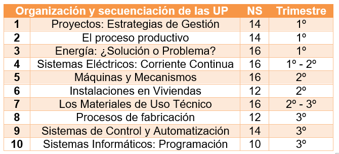
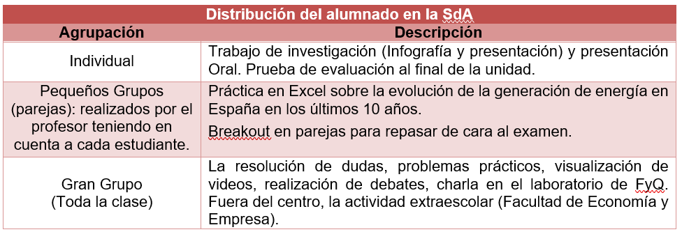
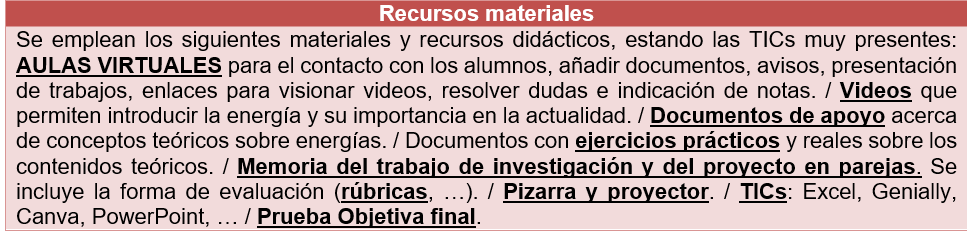

Descripción de la Situación de Aprendizaje (SdA)
La tecnología no es solo el conjunto de saberes mediante los cuales el ser humano transforma su entorno, valiéndose de los recursos disponibles para satisfacer sus necesidades. Es la evolución, el cambio, la necesidad de saber y mejorar. Ayuda a formar personas responsables, capaces de resolver problemas con capacidad crítica y autónoma, y criterios económicos y medioambientales.
La siguiente Situación de Aprendizaje está diseñada en Tecnología e ingeniería I en 1º de bachillerato, donde estas no se limita a la acción del aula. Implica la participación del centro, la comprensión del contexto que rodea a nuestro alumnado, y la colaboración con las familias y otros agentes de la comunidad educativa.
Esta versa sobre los saberes básicos de energía dentro del Bloque G del Decreto 60/2022 del currículo para bachillerato en el Principado de Asturias. Es esencial comprender el sistema energético español y su importancia en el suministro doméstico. Además, es vital que los alumnos tomen conciencia de la producción y del consumo energético a nivel local, nacional y mundial, la eficiencia energética y la sostenibilidad para poder ser críticos con las decisiones que se tomen en nuestra sociedad.
La SdA se consta de 16 sesiones dentro de la 1ª Evaluación (Unidad de Programación 3):

Cada sesión consta de de 55 minutos cada una. Se encuentra encuadrada durante la semana de la ciencia de la Universidad de Oviedo (10- 23 Noviembre 2025). Los espacios del centro que usarán serán: 6 sesiones en aula con proyector, 9 en aula de informática, 1 laboratorio de FyQ y 1 mañana en la Facultad de Economía y Empresa.
La distribución del alumnado a lo largo de la SdA varía de unas actividades a otras:

Los productos que desarrollará el alumnado son:
1. Realización de ejercicios prácticos en clase y casa.
2. Infografía y presentación sobre aspectos relativos a la energía.
3. Excel en el que se recoja información de la generación de electricidad en España en los últimos 10 años.
4. Proyecto digital para calcular una instalación solar doméstica.
5. Breakout a modo de repaso sobre conceptos y cálculos básicos de energía.
6. Examen Forms.
A esto se le suma un debate inicial tras visualizar dos videos, y dos charlas, una en el centro (Funcionamiento del coche de hidrógeno) y otra en la Facultad de Economía y Empresa (Fór,mula 1 al límite: análisis de un accidente).
Finalmente, todos los recursos materiales que los estudiantes y el docente emplearán son los que se encuentran en la siguiente tabla, incluyendo las herramientas tecnológicas:
